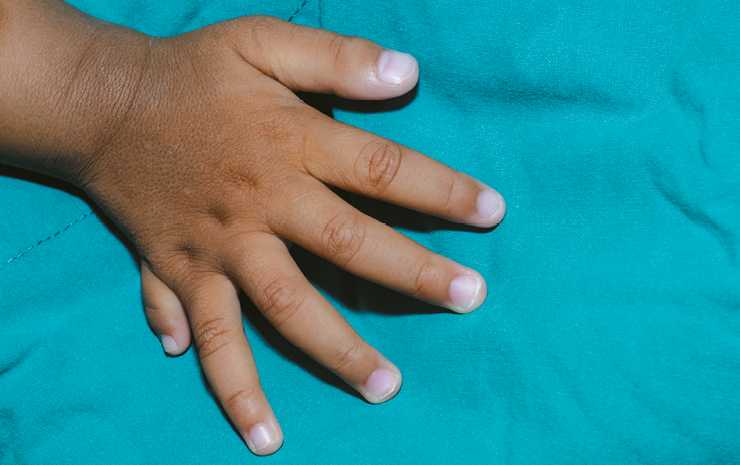

Planta de ervilha, organismo-modelo usado nos experimento de Gregor Mendel.
Wally Eberhart, Visuals Unlimited/Science Photo Library/Fotoarena
O trabalho de alguns pesquisadores causa grande impacto já na época de sua publicação, gerando intensos debates. Esse foi o caso de Origem das espécies, de Charles Darwin.
No entanto, há vezes em que os resultados de uma pesquisa demoram a ser apreciados com a devida importância. Um exemplo disso é o trabalho de Gregor Mendel, um monge vindo de uma família humilde de camponeses. Durante anos, ele se dedicou ao estudo de características de ervilhas nos jardins do Mosteiro Agostiniano de São Tomás. Diferentemente de Darwin, o reconhecimento ao trabalho de Mendel demorou muito tempo e somente ocorreu após pesquisadores independentes chegarem, anos depois, às mesmas conclusões e terem acesso à publicação original.
Gregor Mendel não chegou a viver a sua glória, mas hoje é considerado o “pai da Genética”. Após a sua morte, os outros monges que viviam no mosteiro queimaram todas as anotações feitas acerca das ervilhas, dada a enorme “heresia” praticada por Mendel.
- O que é herança monogênica?
- O que são organismos-modelo?
- Qual é a diferença entre proporção genotípica e proporção fenotípica?
Neste capítulo serão abordadas as habilidades EM13CNT202, EM13CNT205 e EM13CNT301
A herança monogênica
Muitas características de um ser vivo são mais bem compreendidas quando se sabe quais genes estão relacionados a elas. Uma forma de obter essa informação é realizar sucessivas reproduções controladas, isto é, cruzamentos entre os organismos de interesse para que, então, seja definido o padrão de herança.
A herança monogênica ocorre quando apenas um gene é responsável pela determinação de uma característica. Esse tipo de herança foi inicialmente elucidado em 1860 por Gregor Mendel e, ainda hoje, as regras por ele estabelecidas são aplicadas em estudos genéticos. O sucesso de Mendel em muito é decorrente da metodologia empregada na execução dos experimentos e na aplicação de testes estatísticos. Atualmente, os postulados determinados pelo monge austríaco são chamados de leis de Mendel.
A escolha do organismo-modelo
Assim como em qualquer experimento, Mendel precisou escolher o organismo que seria utilizado para testar suas hipóteses. Ele assegurou que esse organismo fosse de fácil manuseio, que produzisse um grande número de descendentes e que tivesse um curto período de geração. O organismo-modelo eleito por Mendel foi a planta de ervilha, da espécie Pisum sativum.
Além de todos os requisitos básicos para ser um organismo-teste, a espécie de planta escolhida por Mendel apresentava outra vantagem: suas flores possuem um mecanismo natural que favorece a autofecundação. Dessa forma, é possível controlar os cruzamentos, garantindo a obtenção de linhagens puras, isto é, sem variação de características de uma geração a outra e que, em termos atuais, são referidas como homozigotas.
Diferentemente do que se observa nos trabalhos atuais, a pesquisa desenvolvida por Mendel não tinha como finalidade identificar as propriedades apresentadas pelas ervilhas; ele buscava compreender como as características eram herdadas de geração em geração.
Para isso, o monge e botânico se debruçou sobre sete características de seu organismo-modelo: a cor e a forma da ervilha, a cor e a forma da vagem, a cor da flor, a altura da planta e a posição do broto na planta. Para todas essas características, Mendel obteve duas linhagens contrastantes, sem que houvesse organismos com características intermediárias.
Variedades fenotípicas das ervilhas escolhidas por Mendel.
GRIFFITHS, A. J. F. et al. Introdução à Genética . 10. ed. Rio de Janeiro: Guanabara Koogan, 2013.
Metodologia de Mendel
Todas as linhagens utilizadas inicialmente por Mendel eram linhagens puras, obtidas e mantidas por autofecundação. Contudo, para prosseguir com seus testes, foi necessário evitar essa forma de reprodução e garantir a ocorrência de fecundação cruzada, ou seja, o encontro de gametas provenientes de diferentes genitores.
Para isso, Mendel retirou os estames de algumas flores das linhagens que ele iria cruzar, antes mesmo de essas estruturas estarem maduras. Em seguida, ele próprio polinizava as flores sem estames, transferindo grãos de pólen retirados de outra linhagem. Dessa forma, Mendel tinha total controle sobre os indivíduos que participavam do cruzamento e que compunham a geração parental, ou geração P.
Estame: porção masculina da flor, em que são produzidos os grãos de pólen que transportam o gameta masculino.
Comparação entre os processos de polinização cruzada e de autofecundação realizados por Mendel.
Emre Terim/Shutterstock.com
Desse primeiro cruzamento feito a partir da geração parental, obtinham-se os descendentes que compunham a primeira geração de filhos, ou geração F1. O processo de reprodução das plantas da geração F1 originava sementes que representavam a segunda geração de filhos, ou geração F2.